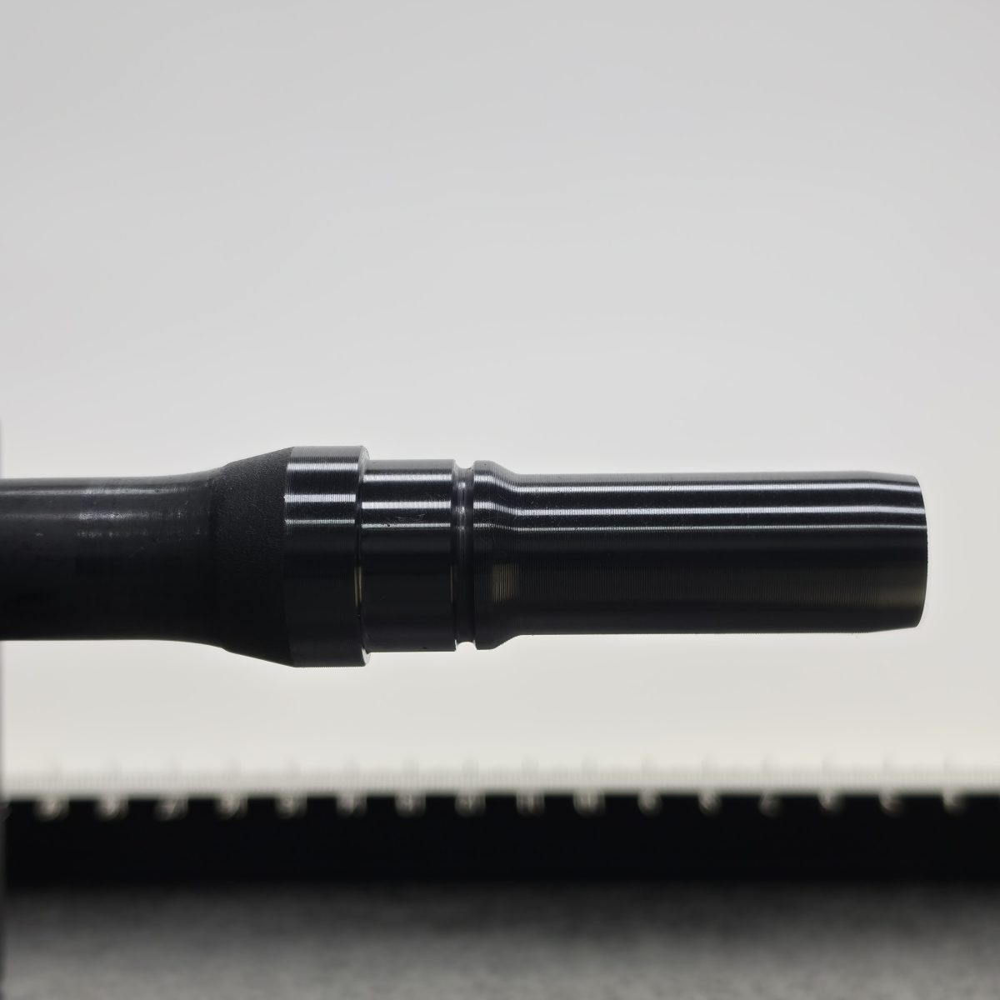
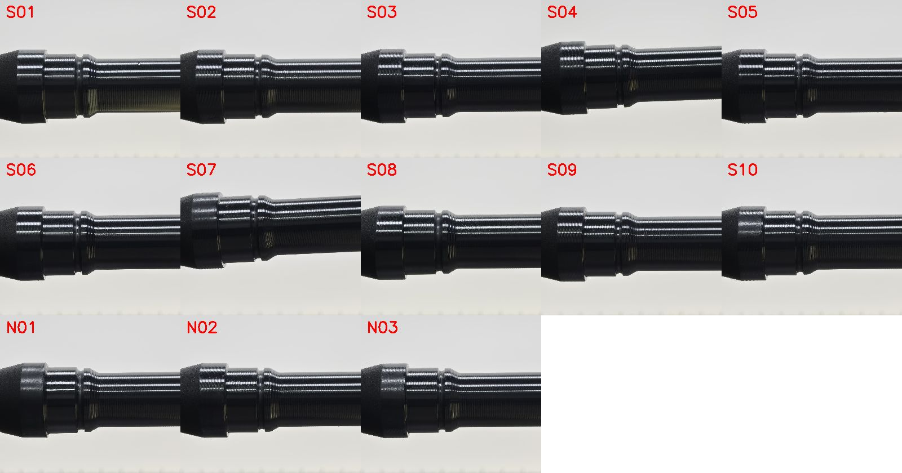
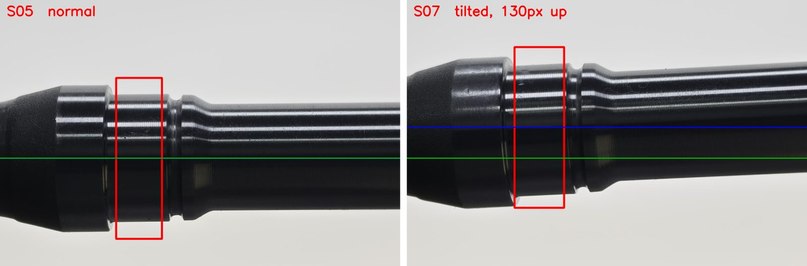
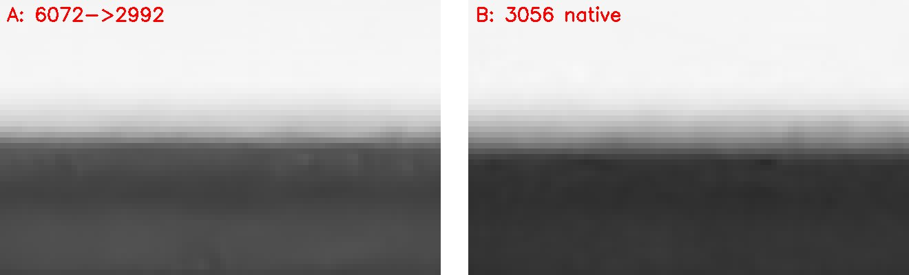
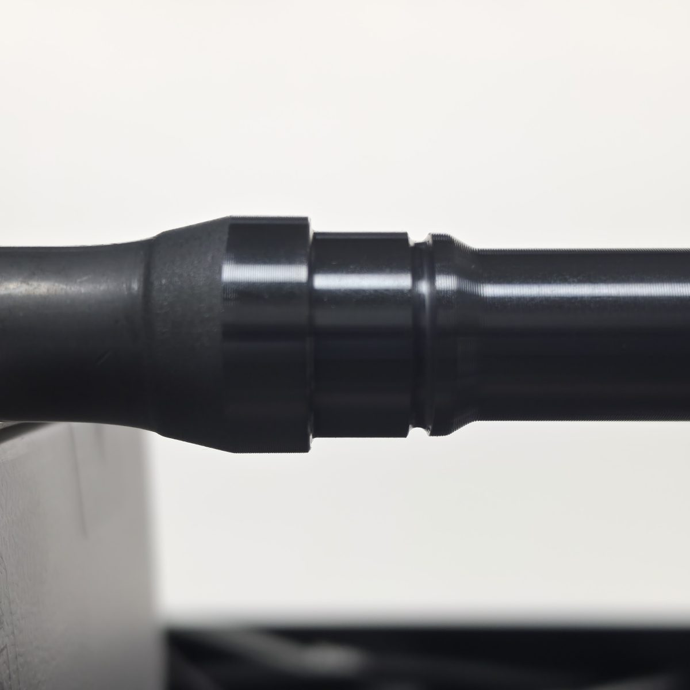

자동차 조향부품 샤프트 외경의 스마트폰 비전 측정 · 7주 파일럿

자동차 조향부품 샤프트의 베어링 압입부 외경. 도면상 특별특성(중요 관리 치수), 허용 전폭 20µm.
작업자가 계측기로 재고 → 수기 → 전산 입력. 2026년 11월 품질경영시스템 인증 심사가 있어 측정 기록의 자동화·추적성 요구가 커지고 있다.
전용 이미지 치수 측정기는 수천만 원대(업계 견적 기준). 이 규모의 공장이 도입하기 어렵다.
이미 주머니에 있고 추가 비용이 0에 가깝다. 문헌: 스마트폰 계측은 가능하되 전용 장비보다 정확도가 낮다(SPIE 2015) / 산업용 카메라 + 백라이트 + 서브픽셀은 3µm(MST 2025). 그 사이 어디까지 갈 수 있는가가 우리 질문이다.
관문 8µm · 목표 3µm · 바이어스 ±1µm는 잠정값. 1주차에 업체 품질담당자와 합의해 확정한다.
측정 오차 sd 3µm 이하, 바이어스 ±1µm 이내. 게이지 R&R 10:1보다 느슨한 정의다 — 계측기를 없애는 게 아니라 회색지대를 계측기에 회부하는 선별 측정이라서다.

161장을 업체 실측값과 대조했더니, 결과가 둘로 갈렸습니다. 13개 중 11개는 한 무리, 2개가 수백 µm 튀었습니다.

S07은 6.9° 기울고 130px 올라간 자세였다(팀원 독립 분석). 같은 결론이 세 사람 데이터에서 반복됐다: 모델이 아니라 거치가 변수다.
기존 모델(7월 조건 학습)은 9/16 시편 하나에서 신뢰도 0.27로 무너졌고, 집 구도에서는 14장 전부 미검출. 9/16 조건으로 재학습하면 어떤 버전이든 0.78 ~ 0.97, 14/14 검출.
필요한 것은 새 아키텍처가 아니라 현장 조건의 학습 데이터.
6008px 원본을 그대로 넣으면 14장 중 5장이 튀었지만, 9개 모델 전부 박스는 정상. 측정 파라미터 문제 → 2992 축소로 해결.

9/16의 바닥 3.5 ~ 4µm는 고정 상수가 아니다. 촬영 조건으로 내려갈 여지가 있다. 비싼 장비 전에 쓸 수 있는 싼 지렛대가 있다는 뜻.
검출 문턱 = 오차 sd 17 × 3. 규격에서 이만큼 벗어난 부품은 헛경보 없이 검출. 가공 누락품(+375µm)은 오차의 15배로 뚜렷.
정상 12개를 하나 빼고 맞혀 보면 평균 오차 8.3 ~ 9.0µm인데, 측정 없이 평균값만 찍어도 8.4µm. 정상 구간(폭 34µm ≈ 1px)에서 측정 정보는 아직 0.
| 측정 오차 sd | 확정 판정 비율 | 확정 중 오판 |
|---|---|---|
| 17µm (지금) | 2% | 57% |
| 8µm (관문) | 3% | 24% |
| 4µm (엣지 바닥 그대로일 때 폰의 최선) | 21% | 2.5% |
| 3µm | 37% | 1.3% |
| 2µm | 54% | 0.9% |
| 1µm (산업용 급) | 72% | 0.6% |
9/16 실측 12개 분포에 측정 잡음을 얹은 시뮬레이션, 회색지대 ±2σ. 바이어스 +4µm면 sd 2.5에서도 오판 6% → 기준물이 필요한 이유. 문턱·회색지대 폭은 현장 검증에서 업체와 합의.
| 순서 | 조치 | 겨냥하는 층 | 무엇을 확인하나 |
|---|---|---|---|
| 1 | 검교정 핀게이지 2개를 부품과 같은 평면에 놓고 같이 찍어 부품 대신 기준으로 | (b) 잔차 13~21 | 잔차 중 기준 구간 몫 · 2점 캘리브 성립 · 바이어스 ±1µm |
| 2 | V블록 + 축 스토퍼 지그, 같은 시편 다시 놓고 20~30장 | (a) 배치 189 | 지금까지 0건인 재장착 산포 |
| 3 | 촬영 조건 고정: 최고 해상도 → 2992 축소 · 근접 · 순수 백라이트 · 드리프트 점검 | (c) 번짐 3.5~4 | 1.0µm 관찰이 현장 조건에서 재현되나 |
| 3-1 | 거치 이상 자동 검출 — 박스 기울기·높이가 범위 밖이면 값을 내지 않고 재장착 요구 | 안전 | 기울어진 부품이 "측정 성공"으로 기록되는 일을 막는다 |
| 4 | 위 셋 적용 후 오차 sd → 광학계 판단점 | — | 계측기급 도달 가능성. 아니면 산업용 광학계 투자 근거 완성 |
1차(3주차) = 한 질문 "잔차의 원인이 기준 구간인가" — 핀게이지 + 재장착 + 칼라·끝단 실측 + 일부러 어긋난 촬영(±10~100px). 2차(7주차) = 최종 검증만. 나머지는 보유 시편으로 자체 촬영.
(c)가 2~3µm로 내려가면 3단 판정 시스템을 현장에 올린다. 안 내려가면 "폰으로는 안 된다"를 숫자로 결론내고 산업용 광학계 투자 근거를 완성한다.

전처리와 측정 로직을 분리하고 변환율·상수를 설정 파일로 — 장비가 바뀌어도 측정 로직은 그대로 옮긴다.
| 구분 | 지표 | 현재값 (9/16) | 목표값 | 측정 방법 | 시점 |
|---|---|---|---|---|---|
| 정량 | 측정 오차 sd (실측 대비) | 17µm | 8µm 이하 → 3µm 도달 여부 판정 | 시편별 실측 vs 측정, 하나 빼고 맞히기 | 1·2차 |
| 정량 | 바이어스 (기준물 대비) | 미측정 | ±1µm 이내 | 핀게이지 2점 캘리브 후 잔차 평균 | 1차 |
| 정량 | 재장착 재현성 σ | 미측정 (0건) | 측정 완료 + 보고 | 같은 시편 재장착 20~30장 | 1차 |
| 정량 | 검출 문턱 | 50~55µm | 30µm 이하 | 오차 sd × 3 (k는 현장 합의) | 2차 |
| 정량 | 판정 성능 | 미측정 | 확정 판정 비율 보고, 확정 중 오판 0 | 실측 대비 3단 판정 집계, 오판 유형별 | 2차 |
| 정량 | 강건성 (위치·기울기·조명) | 130px 어긋남 → +524µm | 허용 범위 수치화, 그 안에서 검출 실패 0 | 어긋남 ±10~100px · 기울기 · 밝기 단계별 | 1·2차 |
| 정량 | 유효 측정선 · 처리 시간 | 23~31/31 · 약 3초 | 23/31 이상 · 5초 이내 | 장당 로그 | 상시 |
| 정성 | 현장 운영성 | — | 작업자 1인이 촬영→판정→기록 | 현장 시연 + 피드백 | 2차 |
검출률 %는 쓰지 않는다(큰 불량 표본 4개, 통계 하한 47%). 목표값은 잠정이며 1주차에 업체 품질담당자와 합의. 9/16·9/18 수치는 진단값이지 성능 보증이 아니다.
| 주 | 기간 | 할 일 | 산출물 |
|---|---|---|---|
| 1 | 09-22~26 | 장비 즉시 주문 · 촬영 프로토콜 v2 · 측정 규격서 · 업체에 1차 방문·실측 요청 | 프로토콜, 규격서 |
| 2 | 09-29~10-02 | 지그 제작 · 자체 촬영 시작(재장착·조건·핀게이지) · 앱에 핀게이지 캘리브 | 자체 데이터, 앱 v3 |
| 3 | 10-05~08 | 현장 1차 = 결정 실험 | 현장 데이터 2 |
| 4 | 10-12~16 | 오차 세 층 재계산 · 관문 판정 · 재검토 지점 | 중간 보고 |
| 5 | 10-19~23 | 3단 판정·회색지대·기록 자동화 연동 | 앱 v4 |
| 6 | 10-26~30 | 위치 모델 현장 조건 재학습 · 운영 시나리오 | 운영 매뉴얼 초안 |
| 7 | 11-02~09 | 현장 2차 = 최종 검증 · 보고서·발표 | 최종 보고 |
| 검교정 핀게이지 2개 | 기준물 (b) |
| 균일 백라이트 + 확산판·배경판 | 조명 (c) |
| V블록 + 축 스토퍼 재료 | 배치 (a) |
| 무거운 삼각대 · 리모컨 셔터 | 흔들림 |
| 현장 교통비 (2회) | 결정 실험 |
| 텔레센트릭·산업용 카메라 대여 | 검토 항목 (4주차 판단점) |
팀 3인: 광학·측정 / 인식·데이터 / 시스템·평가 (단계별 유연 운영). 업체: 품질담당자(실측·기준 합의), 작업자(2차 운영 시험).
| 한계 | 보완 | 안 되면 |
|---|---|---|
| 계획 전체가 새 조건의 촬영에 달려 있다 | 보유 시편 + 핀게이지로 자체 촬영 상시. 현장은 실측이 필요한 검증에만 | 1차가 밀리면 자체 결과로 4주차 재검토, 1차를 5주차로 |
| 거치가 틀려도 파이프라인이 경고 없이 값을 낸다 | 거치 이상 자동 검출 + 첫 장 즉석 확인 | 작업자가 첫 장을 눈으로 확인하는 절차 |
| 시편 12개, 한 세션, 고정 촬영 | 재촬영 1·2차에 재장착 세트 | 161장 + 자체 지그 실험으로 σ 추정 |
| 큰 불량 표본 4개 | 업체에 NG품 보관·제공 요청 | 검출률 대신 문턱 표현 유지 |
| 잔차 13~21µm 원인 미확인 | 칼라·끝단 실측 + 핀게이지로 원인 분리 | 원인이 반사·엣지면 조명 개선으로 전환 |
| 엣지 번짐 바닥 3.5~4µm | 촬영 조건(축소·근접·백라이트)으로 1.0µm 관찰 | 산업용 광학계 필요 근거로 정리 |
| 업체 인증 심사(10월 말~11월 초)와 겹침 | 재촬영을 10월 초·11월 초로 | 2차는 자체 시편으로 대체 |
| 관문 8µm는 근거 없는 잠정값 | 1차 재촬영 후 재설정 | 4주차 재검토 지점 |
"전용 측정기를 사야 하는가"에 대한 숫자 답 · 인증 심사용 자동 측정 기록 · 결과와 무관하게 남는 과정과 데이터
재고 적는 일이 사진 한 장으로 · 가공·정삭 누락을 자기 앞에서 즉시 · 인증 준비 서류가 줄어든다
계측기급 정밀도에 7주 안에 도달하지 못하더라도 이 둘은 남습니다.